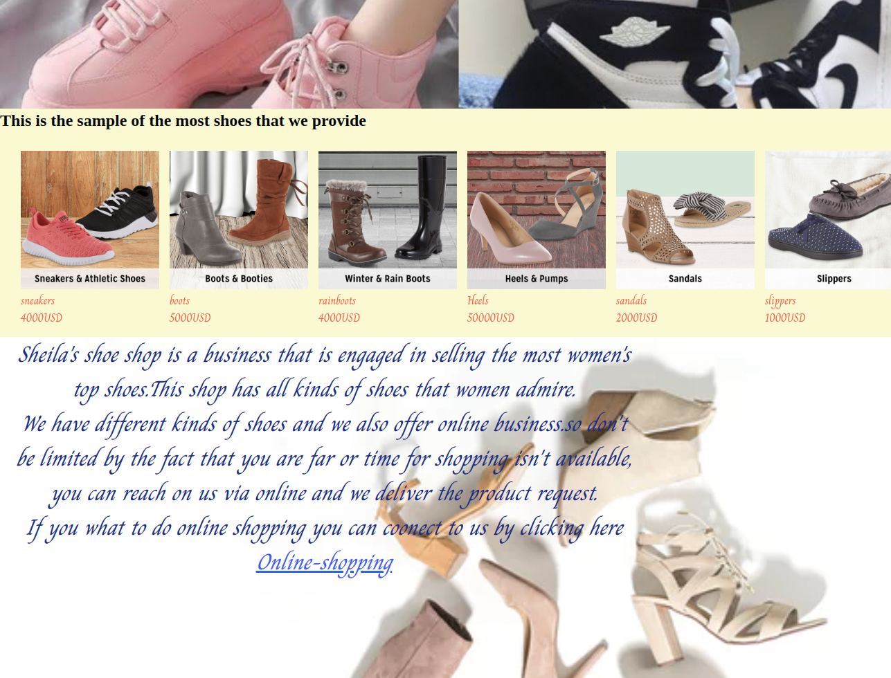

Hi I'm UWITONZE BRENDAH A So1ftware-Developer
brendahuwitonze
uwitonze brendah
brendah brex
As I had said before my names are Uwitonze brendah,a self-motivated young woman of integrity and self-respect.Am a 2019 highschool graduate,from NEWLIFE CHRISTIAN HIGH SCHOOL.And currently am student in MORINGA-SCHOOL.
MORINGA-SCHOOL is a school that offers short term courses in software-development, when I was still in my high school I had a vision of becoming software developer.So the passion and the desire of doing software development as my career pushed me to this course and I really enjoy it so much.
Basketball my best interest
Guitar:I enjoy playing guitar as I worship God
I really enjoy playing basketball so much and I love the game at the extend I even became the captain of our team at the school where I was studying
I also enjoy worshiping the creator of everything for his goodness,through singing,doing acts of compassion ,being kind and also loving. I really enjoy many different things but the listed are the ones on top
Though am still a student,I have developed some skills like leadership skills and computer skills.
When I was still in my highschool I was given the opportunity to lead my collignes,In my O-level I was the Ass-headmonitor and then in A-level I was the sports and game prefect.And in additon to that I was chosen to be the student-senior-pastor and through all those processes I was able to learn more about leadership.
As I had said that Iam a student at moringa school studying software development,Sofar I have learned some programing languages like, Javascript,hyper-text-markup language (html) and also cascading stylesheet(css)for styling html. As beginner, I managed to do my first project,and I used Hyper-text-markup language and cascading style sheet for Desgning the codes.The website that I worked on was for a certain shop that sells shoes for woman via online I designed it in away that person can make orders anytime and in any place and they are delivered to him or her.
To view the website just click on this link sheila's-shoe-shop